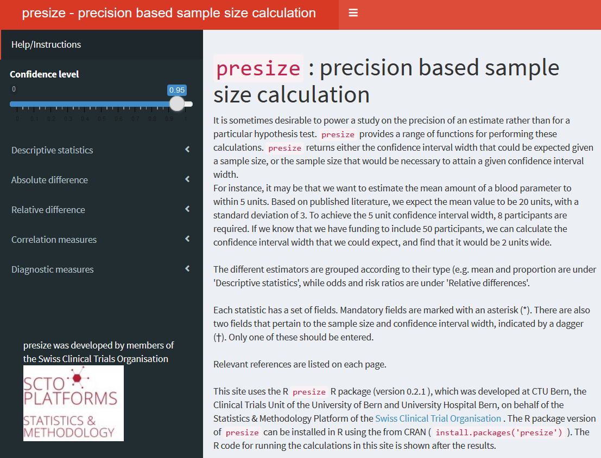

Bland (2009) recommended to base study sizes on the width of the confidence interval rather the power of a statistical test. The goal of presize is to provide functions for such precision based sample size calculations. For a given sample size, the functions will return the precision (width of the confidence interval), and vice versa.
Installation
presize can be installed from CRAN in the usual manner:
You can install the development version of presize from github with:
Note that remotes treats any warnings (e.g. that a certain package was built under a different version of R) as errors. If you see such an error, run the following line and try again:
Overview
presize provides functions for
| Measure | Function | Methods available |
|---|---|---|
| Descriptive measures | ||
| Mean |
prec_mean
|
|
| Proportion |
prec_prop
|
Wilson, Agresti-Coull, exact, Wald (see Brown, Cai, and DasGupta 2001) |
| Rate |
prec_rate
|
Score, variance stabilizing, exact, Wald (see Barker 2002) |
| Absolute differences | ||
| Mean difference |
prec_meandiff
|
|
| Risk difference |
prec_riskdiff
|
Newcombe (Newcombe 1998), Miettinen-Nurminen (Miettinen and Nurminen 1985), Agresti-Caffo (Agresti and Caffo 2000), Wald |
| Relative differences | ||
| Odds ratio |
prec_or
|
Gart, Wolff, independence smoothed logit (see Fagerland, Lydersen, and Laake 2015) |
| Risk ratio |
prec_riskratio
|
Koopman (Koopman 1984), Katz (Katz et al. 1978) |
| Rate ratio |
prec_rateratio
|
Rothman (Rothman and Greenland 2018) |
| Correlation measures | ||
| Correlation coefficient |
prec_cor
|
Pearson, Kendall, Spearman (see Bonnett and Wright 2000) |
| Intraclass correlation |
prec_icc
|
Bonnett (2002) |
| Limit of agreement |
prec_lim_agree
|
Bland and Altman (1986) |
| Cohen’s kappa |
prec_kappa
|
Rotondi and Donner (2012) |
| Diagnostic measures | ||
| Sensitivity1 |
prec_sens
|
As per prec_prop
|
| Specificity1 |
prec_spec
|
As per prec_prop
|
| Area under the curve |
prec_auc
|
Hanley and McNeil (1982) |
| Negative likelilood ratio2 |
preg_neg_lr
|
Simel, Samsa, and Matchar (1991) |
| Positive likelilood ratio2 |
preg_pos_lr
|
Simel, Samsa, and Matchar (1991) |
| Generic likelilood ratio |
preg_lr
|
Simel, Samsa, and Matchar (1991) |
1 Simple wrappers for prec_prop.
2 Wrappers for prec_lr with values provided via sens and spec
Example
Suppose we want to estimate the proportion of hospital admissions with diabetes. Diabetes has a prevalence of approximately 10% (Emerging Risk Factors Collaboration et al. (2010)). We assume a slightly higher proportion of diabetics, 15%, as diabetes is a risk factor for a wide range of conditions. We want to estimate the prevalence of diabetes to within 5% (plus/minus 2.5%). With presize, this is simple. We use the prec_prop (precision of a proportion) function and pass our 15% and 5% as arguments p and conf.width:
library(presize) # load the package
prec_prop(p = 0.15, conf.width = 0.05)
#> Warning in prec_prop(p = 0.15, conf.width = 0.05): more than one method was
#> chosen, 'wilson' will be used
#>
#> sample size for a proportion with Wilson confidence interval.
#>
#> p padj n conf.width conf.level lwr upr
#> 1 0.15 0.1517077 783.4897 0.05 0.95 0.1267077 0.1767077
#>
#> NOTE: padj is the adjusted proportion, from which the ci is calculated.In the n column, we see that we would need to ask 784 (rounding 783.5 up) patients to achieve the desired CI width. Disappointingly, we also know that we only have funds to collect the data from 600 patients. We wonder if 600 patients would yield sufficient precision - we could also accept a CI width of 6% (plus/minus 3%). In such a case, we can pass the arguments p and n.
prec_prop(p = 0.15, n = 600)
#> Warning in prec_prop(p = 0.15, n = 600): more than one method was chosen,
#> 'wilson' will be used
#>
#> precision for a proportion with Wilson confidence interval.
#>
#> p padj n conf.width conf.level lwr upr
#> 1 0.15 0.1522266 600 0.05713404 0.95 0.1236596 0.1807936
#>
#> NOTE: padj is the adjusted proportion, from which the ci is calculated.Now we see that with 600 patients, the CI would have a width of 5.7%. We are happy with this and continue planning our study with those values. All of the functions listed in Table 1 can be used similarly.
We can also look at a range of scenarios simulatenously by passing a vector to one of the arguments, which could be used to create something analogous to a power curve:
prec_prop(p = 0.15, n = seq(600, 800, 50))
#> Warning in prec_prop(p = 0.15, n = seq(600, 800, 50)): more than one method was
#> chosen, 'wilson' will be used
#>
#> precision for a proportion with Wilson confidence interval.
#>
#> p padj n conf.width conf.level lwr upr
#> 1 0.15 0.1522266 600 0.05713404 0.95 0.1236596 0.1807936
#> 2 0.15 0.1520563 650 0.05489329 0.95 0.1246097 0.1795030
#> 3 0.15 0.1519102 700 0.05289705 0.95 0.1254617 0.1783588
#> 4 0.15 0.1517835 750 0.05110386 0.95 0.1262316 0.1773355
#> 5 0.15 0.1516726 800 0.04948148 0.95 0.1269319 0.1764133
#>
#> NOTE: padj is the adjusted proportion, from which the ci is calculated.Shiny app
An online interactive version of the package is available here. The app can also be launched locally via launch_presize_app() in RStudio.

Getting help
The package website, including more details on the functions, can be found here.
If you have a question, feel free to make a thread on the discussion page.
If you encounter a bug, please create an issue.
Contributing
Contributions to presize are welcome. If you have ideas, open an issue or a discussion thread on GitHub.
If you want to contribute code, please feel free to fork the repository, make your changes and make a pull request to have them integrated into the package. New functionality should have accompanying tests and pass continuous integration. See also the contributing guidelines.
Funding
presize was largely developed at CTU Bern, with collaboration from CTU Basel. Funding was provided by the Swiss Clinical Trial Organisation.
Citation 
If you use presize, please cite it in your publication as:
Haynes et al., (2021). presize: An R-package for precision-based sample size calculation in clinical research. Journal of Open Source Software, 6(60), 3118, https://doi.org/10.21105/joss.03118
References
Agresti, A, and B Caffo. 2000. “Simple and Effective Confidence Intervals for Proportions and Differences of Proportions Result from Adding Two Successes and Two Failures.” The Americal Statistician 54 (4): 280–88. https://doi.org/10.2307/2685779.
Barker, L. 2002. “A Comparison of Nine Confidence Intervals for a Poisson Parameter When the Expected Number of Events Is ≤ 5.” The Americal Statistician 56 (2): 85–89. https://doi.org/10.1198/000313002317572736.
Bland, J M, and D G Altman. 1986. “Statistical Methods for Assessing Agreement Between Two Methods of Clinical Measurement.” Lancet i(8476): 307–10. https://doi.org/10.1016/S0140-6736(86)90837-8.
Bonnett, D G. 2002. “Sample Size Requirements for Estimating Intraclass Correlations with Desired Precision.” Statistics in Medicine 21: 1331–5. https://doi.org/10.1002/sim.1108.
Bonnett, D G, and T A Wright. 2000. “Sample Size Requirements for Estimating Pearson, Kendall and Spearman Correlations.” Psychometrika 65: 23–28. https://doi.org/10.1007/BF02294183.
Brown, L D, T T Cai, and A DasGupta. 2001. “Interval Estimation for a Binomial Proportion.” Statistical Science 16 (2): 101–17. https://doi.org/10.1214/ss/1009213286.
Emerging Risk Factors Collaboration, N Sarwar, P Gao, S R Seshasai, R Gobin, S Kaptoge, E Di Angelantonio, et al. 2010. “Diabetes Mellitus, Fasting Blood Glucose Concentration, and Risk of Vascular Disease: A Collaborative Meta-Analysis of 102 Prospective Studies.” Lancet 375 (9733): 2215–22. https://doi.org/10.1016/S0140-6736(10)60484-9.
Fagerland, M W, S Lydersen, and P Laake. 2015. “Recommended Confidence Intervals for Two Independent Binomial Proportions.” Statistical Methods in Medical Research 24 (2): 224–54. https://doi.org/10.1177/0962280211415469.
Hanley, J A, and B J McNeil. 1982. “The Meaning and Use of the Area Under a Receiver Operating Characteristic (Roc) Curve.” Radiology 148: 29–36. https://doi.org/10.1148/radiology.143.1.7063747.
Katz, D, J Baptista, S P Azen, and M C Pike. 1978. “Obtaining Confidence Intervals for the Risk Ratio in Cohort Studies.” Biometrics 34: 469–74. https://doi.org/10.2307/2530610.
Koopman, P A R. 1984. “Confidence Intervals for the Ratio of Two Binomial Proportions.” Biometrics 40: 513–17. https://doi.org/10.2307/2531551.
Miettinen, O, and M Nurminen. 1985. “Comparative Analysis of Two Rates.” Statistics in Medicine 4: 213–26. https://doi.org/10.1002/sim.4780040211.
Newcombe, R G. 1998. “Interval Estimation for the Difference Between Independent Proportions: Comparison of Eleven Methods.” Statistics in Medicine 17: 873–90. https://doi.org/10.1002/(sici)1097-0258(19980430)17:8%3C873::aid-sim779%3E3.0.co;2-i.
Rothman, K J, and S Greenland. 2018. “Planning Study Size Based on Precision Rather Than Power.” Epidemiology 29: 599–603. https://doi.org/10.1097/EDE.0000000000000876.
Rotondi, M A, and A Donner. 2012. “A Confidence Interval Approach to Sample Size Estimation for Interobserver Agreement Studies with Multiple Raters and Outcomes.” Journal of Clinical Epidemiology 65: 778–84. https://doi.org/10.1016/j.jclinepi.2011.10.019.
Simel, D L, G P Samsa, and D B Matchar. 1991. “Likelihood Ratios with Confidence: Sample Size Estimation for Diagnostic Test Studies.” Journal of Clinical Epidemiology 44 (8): 763–70. https://doi.org/10.1016/0895-4356(91)90128-v.